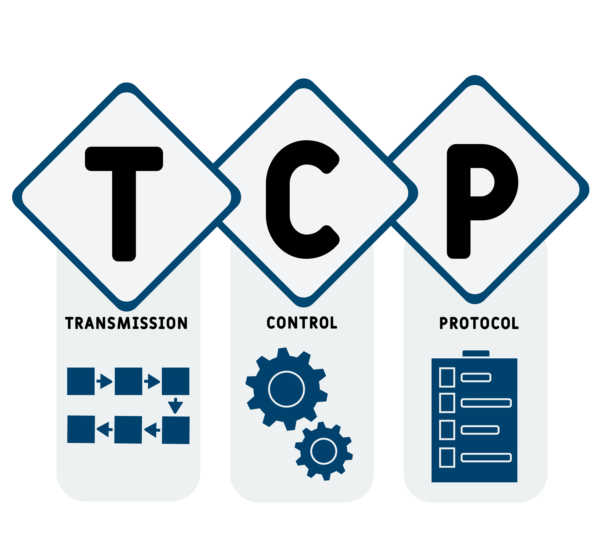

The Internet and Advancements
Computer Network Key Chronological Events.
- 1958- ARPA (Advanced Research Projects Agency) was created to improve technological advances.
- 1968- First people who worked in the network idea or project to have computers to communicate.
- Bob Taylor wanted to build one single network and asked for funding for work in a computer network.
- Lawrence Roberts created the first network between two computers and designed the computer network.
- 1969- All four sites were interconnected: UCLA, SRI, UCSB, University of Utah.
- 1971- ARPANET had 18 mainframe computers connected to the network.
- 1971- Email application (Killer app) introduced by Raymond Tomlinson.
- 1972- ARPANET demonstrated the computer network in Washington DC.
-
- 1973- Vint Cerf and Bob Kahn worked together to develop rules and procedures known as TCP/IP Protocol that would allow passing packets back and forth.
- 1983- TCP/IP was introduced as the universal standard of protocols.
- 1992- The Internet became public by a bill passed by Congress and became law a few months after.
World Wide Web Key Chronological Events
